Five principles that shape every visit
We are a family dental practice devoted to restoring and enhancing the natural beauty of your smile using conservative, state-of-the-art procedures with modern technology that will result in beautiful, long lasting smiles.
High Standards
A standard of excellence in personalized dental care enables us to provide the quality dental services our patients deserve. We provide comprehensive treatment planning and use restorative and cosmetic dentistry to achieve your optimal dental health. Should a dental emergency occur, we make every effort to see and care for you as soon as possible.
Education & Prevention
As a practice, we are true believers that preventive care and education are the keys to optimal dental health. We strive to provide “dental health care” vs. “disease care.” That’s why we focus on thorough exams — checking the overall health of your teeth and gums, performing oral cancer exams, and taking x-rays when necessary. We also know that routine cleanings, flossing, sealants, and fluoride are all helpful in preventing dental disease.
Uncompromising Safety
Infection control in our office is also very important to us. To protect our patients and ourselves, we strictly maintain sterilization and cross contamination processes using standards recommended by the Occupational Safety and Health Administration (OSHA), the American Dental Association (ADA), and the Center for Disease Control (CDC).
Training & Expertise
As your dental health professionals, we want you to be confident knowing that we are a team of highly trained and skilled clinicians. To give you the best possible service and results, we are committed to continuing education classes and learning. We attend dental lectures, meetings, and dental conventions to stay informed of new techniques, the latest products, and the newest equipment that a modern dental office can utilize to provide state-of-the-art dental care.
Positive Experience
Building a foundation of trust by treating our patients as special individuals is vital to our success. We understand how uneasy some patients may feel about their dental visits, and how we can make a difference in providing a relaxing and positive experience. Our entire team is dedicated to providing you with excellent, personalized care and service to make your visits as comfortable and pleasant as possible.
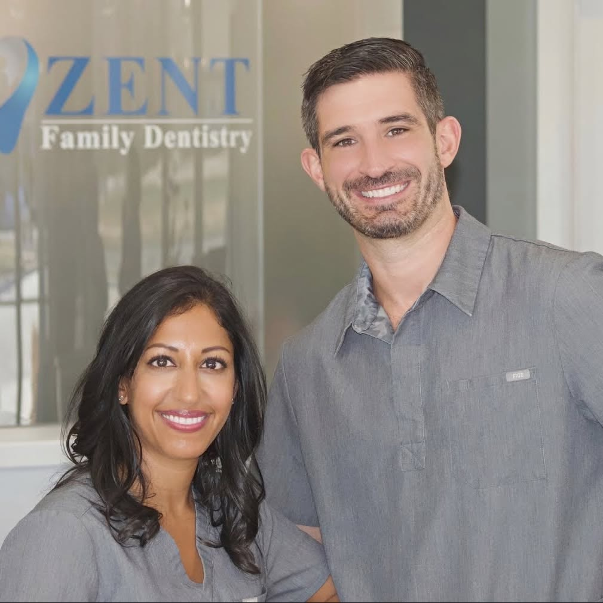
Stephen & Sheena Zent
Drs. Zent are dedicated to providing their patients with the highest quality care by practicing conservative, preventative dentistry. They believe in a comprehensive approach to treating patients’ oral health with the goal of providing healthy smiles that last a lifetime.
Together with their associates and a team of hygienists, assistants, and coordinators, they’ve built a practice where patients are treated like family. Get to know everyone below.
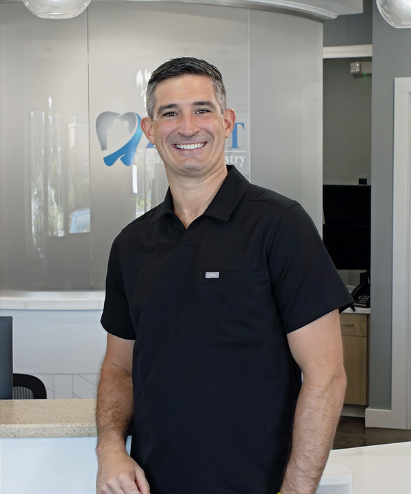
Dr. Stephen A. Zent
Dr. Stephen A. Zent was born and raised in Fort Wayne, Indiana. After attending Bishop Dwenger High School, he attended Indiana University where he received his Bachelor of Arts degree in Chemistry. Dr. Zent then received his Doctor of Dental Surgery degree from the Indiana University School of Dentistry.
After graduating from IUSD, Drs. Zent moved to Fort Wayne to practice dentistry. They married in July 2012 and decided they were ready to manage their own practice and move to South Bend where they could practice dentistry in a relaxed family setting.
Drs. Zent are trained in a multitude of dental treatments including, but not limited to, restorations (fillings), endodontics (root canals), oral surgery, fixed prosthodontics (crowns and bridges), periodontal disease diagnosis and treatment, oral cancer screening, clear aligner orthodontics, removable prosthodontics (dentures and partial dentures), TMJ and sleep medicine, pediatric dentistry, implant dentistry, therapeutic and cosmetic Botox procedures, and cosmetic dentistry.
Outside of work, the Zents enjoy spending time outdoors, cooking, watching movies, reading, playing sports, tailgating for football games, traveling, and spending time with family and friends. They welcomed their first child, Naya, on August 1, 2015 and their second child, Nolan, on September 1, 2017. Their son Nolan was born with a rare, genetic disease called Menkes Disease. Drs. Zent were advocates for awareness for the disease and organized fundraisers to help raise money for both The Menkes Foundation as well as South Bend’s local respite hospital for medically fragile children, A Rosie Place. Unfortunately, sweet Nolan passed away on February 6, 2020 just before turning 2.5 years old. On July 1, 2020, the Zents welcomed their third child, Zahra.
Drs. Zent are standing members of the American Dental Association, Indiana Dental Association, and North Central Dental Society. They enjoy keeping up with new technology as well as continuing education. Drs. Zent are also currently on the board of directors for Dr. Angie’s Dental Health Exchange — a not-for-profit organization in which volunteer dentists provide dental treatment to the underserved after they have completed a certain number of community service hours in exchange for their dental care.
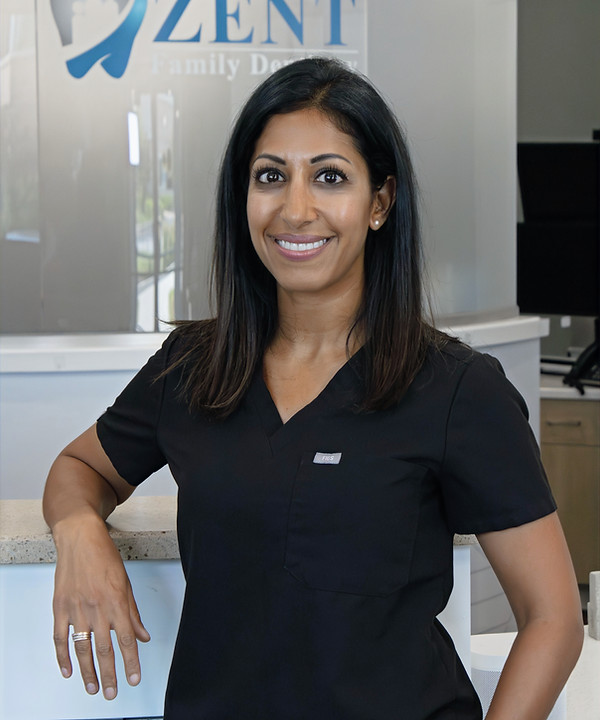
Dr. Sheena K. Zent
Dr. Sheena K. Zent was born in Cookeville, Tennessee. After moving around, including years spent in Europe, Sheena attended Clay High School in South Bend, Indiana. After graduation, Sheena attended the University of Michigan where she received her Bachelor of Science degree in Neuroscience. She then went to Indiana University School of Dentistry, and she attained her Doctor of Dental Surgery degree.
After graduating from IUSD, Drs. Zent moved to Fort Wayne to practice dentistry. They married in July 2012 and decided they were ready to manage their own practice and move to South Bend where they could practice dentistry in a relaxed family setting.
Drs. Zent are trained in a multitude of dental treatments including, but not limited to, restorations (fillings), endodontics (root canals), oral surgery, fixed prosthodontics (crowns and bridges), periodontal disease diagnosis and treatment, oral cancer screening, clear aligner orthodontics, removable prosthodontics (dentures and partial dentures), TMJ and sleep medicine, pediatric dentistry, implant dentistry, therapeutic and cosmetic Botox procedures, and cosmetic dentistry.
Outside of work, the Zents enjoy spending time outdoors, cooking, watching movies, reading, playing sports, tailgating for football games, traveling, and spending time with family and friends. They welcomed their first child, Naya, on August 1, 2015 and their second child, Nolan, on September 1, 2017. Their son Nolan was born with a rare, genetic disease called Menkes Disease. Drs. Zent were advocates for awareness for the disease and organized fundraisers to help raise money for both The Menkes Foundation as well as South Bend’s local respite hospital for medically fragile children, A Rosie Place. Unfortunately, sweet Nolan passed away on February 6, 2020 just before turning 2.5 years old. On July 1, 2020, the Zents welcomed their third child, Zahra.
Drs. Zent are standing members of the American Dental Association, Indiana Dental Association, and North Central Dental Society. They enjoy keeping up with new technology as well as continuing education. Drs. Zent are also currently on the board of directors for Dr. Angie’s Dental Health Exchange — a not-for-profit organization in which volunteer dentists provide dental treatment to the underserved after they have completed a certain number of community service hours in exchange for their dental care.
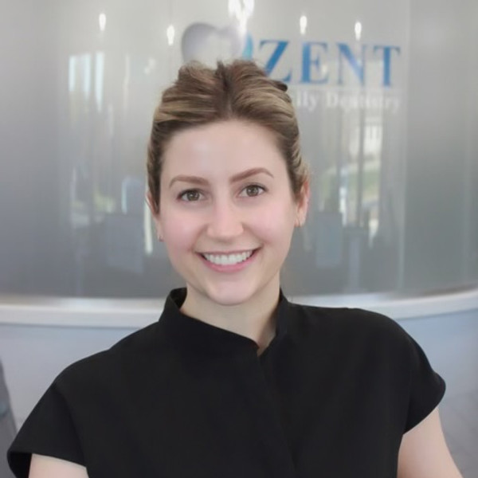
Dr. Tracy Kelsey
Dr. Tracy Kelsey was raised in Elkhart, Indiana and graduated from Elkhart Memorial High School. She received her B.S. degree in Neuroscience along with minors in Biology and Psychology from Indiana University Bloomington. After graduation, she attended the prestigious Tufts University School of Dental Medicine in Boston, Massachusetts where she received her Doctorate of Dental Medicine. After receiving her doctorate, Dr. Kelsey decided she would like to further hone her skills in general dentistry with a focus on preventative and cosmetic care by completing an Advanced Education in General Dentistry Residency in Boston. Dr. Kelsey is a member of the American Dental Association, Indiana Dental Association, and the North Central Dental Association and is also a certified Invisalign Provider.
Dr. Kelsey’s favorite part of dentistry is getting to know her patients on a more personal level, but, not far behind, is seeing the proud smile of a patient after completion of a smile makeover. She strongly believes in the value of continuing education and keeping up-to-date with the latest advancements in dentistry.
When not working with patients, Dr. Kelsey loves spending time with her family and friends, traveling, pilates, spending time outdoors and cooking.
Dr. Farouk Alshatti
Dr. Alshatti earned his Doctor of Dental Surgery (DDS) degree from the University of Minnesota School of Dentistry and completed an Advanced Education in General Dentistry (AEGD) residency at the South Texas Veterans Health Care System in San Antonio. During his residency, Dr. Alshatti received advanced training in comprehensive general dentistry while caring for a diverse patient population with a wide range of restorative, surgical, and complex dental needs. His training emphasized comprehensive treatment planning, digital dentistry, endodontics, implant placement and restoration, oral surgery, bone grafting, and IV moderate sedation, allowing him to provide a broad scope of care with confidence and precision.
Dr. Alshatti enjoys combining science, technology, and artistry to help patients achieve healthy, functional, and confident smiles. He believes in taking the time to understand each patient’s goals, explain treatment options clearly, and develop comprehensive treatment plans that focus on long-term oral health. He is a member of the American Dental Association, the Academy of General Dentistry, the Indiana Dental Association, and the Chicago Dental Society.
Outside the office, Dr. Alshatti enjoys playing pickleball, hiking, cooking, and spending time with friends and family. He is excited to join the team at Zent Family Dentistry and looks forward to building lasting relationships with patients while serving the South Bend community.
Sarah Grimes
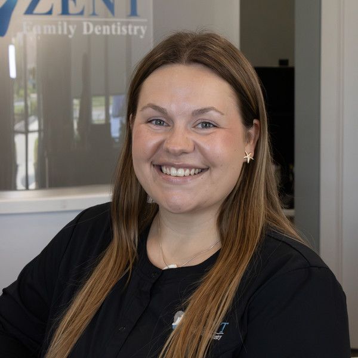
Maiya
Born and raised in Mishawaka, Maiya now calls the South Bend area home. She’s been working in the dental field since 2020 and enjoys meeting new patients, making them comfortable, and adding a little brightness to their day. Outside of work, life is full and happy with her fiancé and their two sweet babies. You’ll often find her chasing sunshine with her kids, listening to live music, exploring the farmers market, or cooking something delicious. She’s happiest with the sun on her face and good music — especially Taylor Swift — in the air.
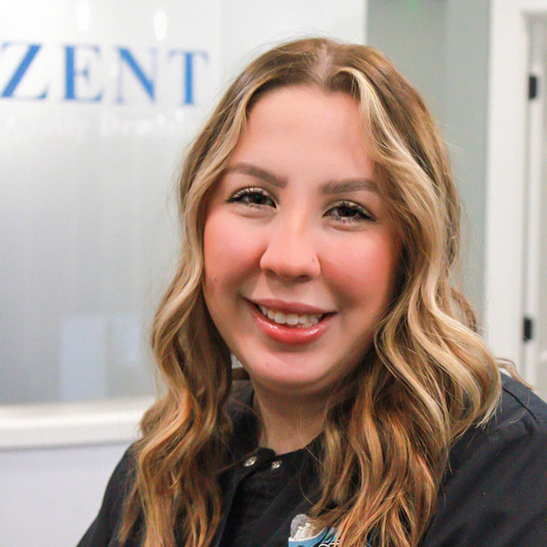
Sydney
Sydney was born and raised in Mishawaka, and is a Mishawaka High School graduate. During her high school years, she also attended Elkhart Career Center where she learned her Dental Assisting skills. Since then, she made a decision to transition to a front desk position and she loves it! Sydney finds happiness in making patients feel welcome and comfortable, and does everything in her power to ensure a great experience. In her free time, Sydney enjoys spending time with her family and friends, and playing with her German Shepherd pup, Nova.
Leilany
Andrea
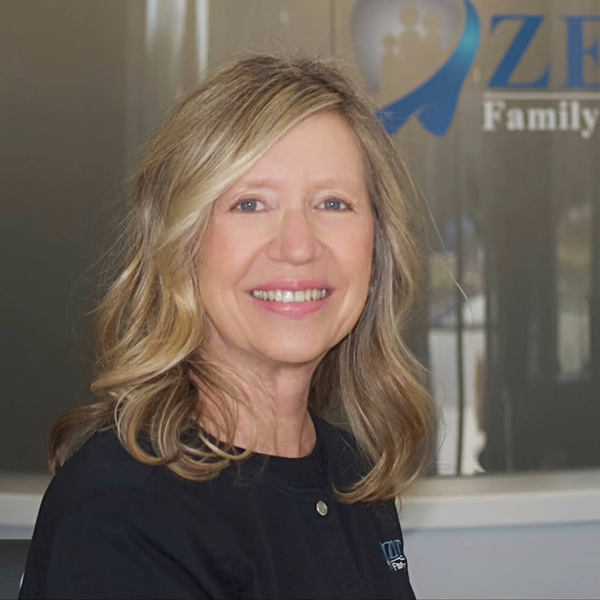
Jaci
Jaci is passionate about being a dental hygienist. She is a graduate of IUSB with a degree in Dental Hygiene, as well as a Bachelor Degree of General Studies. As an adjunct faculty member in the IUSB Dental Hygiene Program for 10 years, Jaci developed a strong interest in learning and teaching, and is very interested in the link between oral health and total body health. Most of all, Jaci enjoys and values the relationships that she has with patients of all ages. Jaci is inspired by them to provide the highest level of care possible. It is a pleasure to work with such a professional, skilled, and caring staff in our new state-of-the-art dental facility.
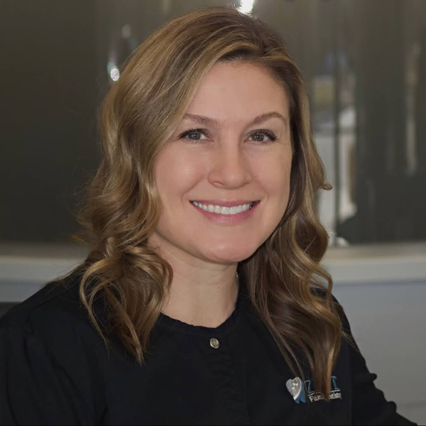
Audrey
Audrey graduated from IUSB and is a licensed dental hygienist. She has worked at the Colfax office since graduating in 2005. A few things she enjoys about her profession are helping people obtain optimal oral hygiene, sharing patient education information and building friendly and lasting relationships with her patients. Audrey loves spending time with her husband, two young children and dog. She spends most of her time at her kids’ sporting events, working out, cooking, traveling and socializing with family and friends.
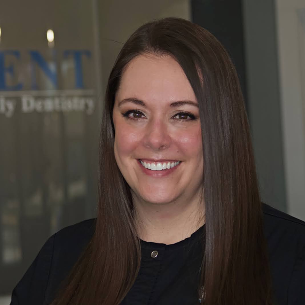
Lynn
Lynn is an IUSB graduate. She has worked in the local dental community full-time for ten years now. Keeping the patient’s needs in mind during their appointment, Lynn is most concerned for her patient’s comfort. It is important to Lynn to share her dental knowledge for her patients to have confidence in their own home care routine. When she is not working, Lynn spends time reading, running and doing Pinterest projects. Lynn enjoys spending time with her family most. Lynn was excited to join our team in 2015 due to the wonderful family-friendly environment.
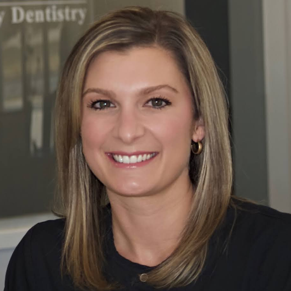
Jaime
Jaime is a 2007 graduate from the IUSB dental hygiene program and has been practicing in our area for over 10 years. She enjoys developing relationships and working one on one with patients. Jaime feels education plays a key role in disease prevention and loves providing the knowledge her patients need to improve their oral health on a daily basis. In her free time she enjoys spending time with her family and friends, as well as cooking and making sweet treats.
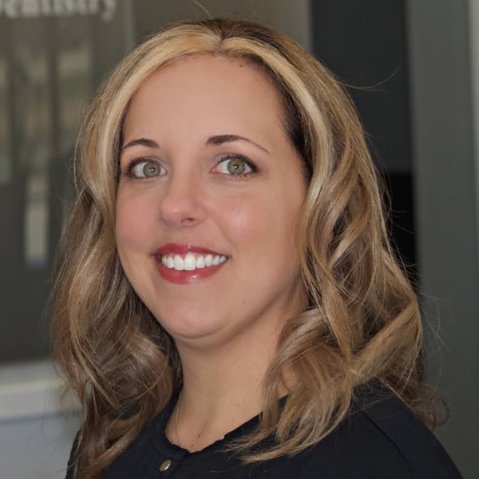
Tracy
Tracy is a graduate of Ferris State University, and has been practicing dental hygiene in the area for over 18 years. Tracy believes in treating each patient like family, making them feel comfortable and giving the best care possible. Her favorite part of her job is getting to know so many amazing people and building relationships with her patients.
Tracy feels privileged to be a part of the Zent Family Dentistry team because everyone in our office is sincerely devoted to our patients and giving them the very best treatment in every aspect of their visit. When Tracy is not at the office, you can find her enjoying time with her husband and 2 children at their sporting events, volunteering at school, exercising, traveling and serving at her church.
Shae
Hi! I’m Shae, a Registered Dental Hygienist and graduate of Indiana University South Bend. My love for dentistry started with my grandpa, who was a dentist, and continued when my uncle took over his practice. I am very passionate about helping patients feel comfortable, cared for, and confident in their oral health! Outside of the office, I enjoy running, spending time with family and friends, and being outside!
Alexis
Alexis graduated from IUSB. During her time there, she served as President of the Dental Hygiene Program, developing a strong passion for leadership and advancing the dental hygiene profession. Alexis is passionate about educating patients on the connection between oral health and overall wellness and believes dental care goes far beyond just a cleaning. She enjoys building relationships with her patients, helping them feel comfortable, and empowering them to take charge of their oral health.
Outside of the office, Alexis enjoys traveling on weekend trips, attending concerts, and exploring new places. She also has a heart for mission work and is passionate about using her skills to make a difference in underserved communities.
Lauren
Lauren was born in Indianapolis and raised in Granger. She graduated from Ivy Tech Community College as a Registered Dental Hygienist.
Lauren has always enjoyed getting to know people and making those around her feel comfortable. She has a warm and friendly personality and strives to create a relaxed, positive experience for every patient. She believes that building trust and taking the time to get to know each patient is an important part of providing great care. Lauren also enjoys educating her patients and helping them better understand their oral health so they can feel confident in taking care of their smile.
Outside of the office, Lauren enjoys spending time with her orange cat, Winnie, reading, and being outside. She also loves spending time with her family and friends and making the most of her time outside of work.
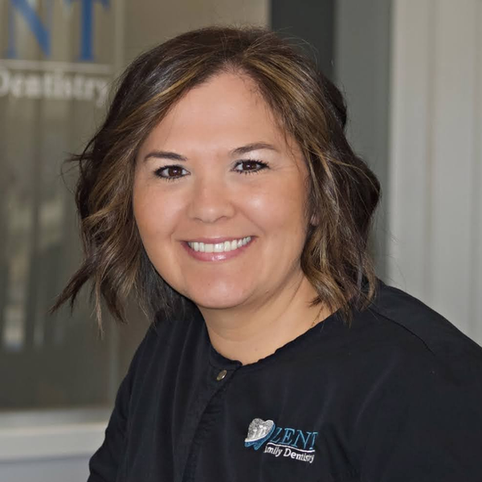
Martha
Martha was born in Louisiana and raised in Arkansas, but she has been living in South Bend for 11 years. She received her training at the Michiana Dental Assisting School. Martha is a fun-loving, outgoing person who loves developing relationships with patients and helping to make their appointment enjoyable and comfortable. As an expanded duty dental assistant, Martha also takes pride in restoring patients’ teeth so that they can have a smile that they can show off to friends. Martha has been married for 11 years and has 2 children. They also have a rescue pup named Bennie. In her spare time, Martha loves to hang out with family and friends, and spend time outdoors.
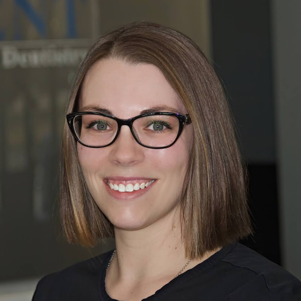
Saleena
Saleena was born and raised in Niles, MI and now lives in South Bend. She is a graduate of Lake Michigan College with a degree in Dental Assisting. Saleena enjoys growing, learning and expanding her abilities in the dental profession. She loves spending time with her family, friends and two dogs. In her spare time, she enjoys reading and crocheting. Saleena is very excited to be a part of our dental team.
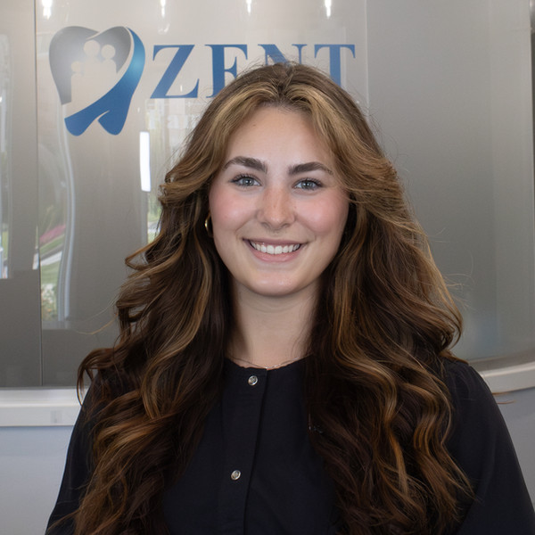
Serena
Serena was born and raised in Oregon and now lives in the South Bend area. She is a graduate of Ivy Tech College with a degree as an Expanded Functions Dental Assistant. Serena enjoys learning more about patients and strives to help them achieve their best smile. In her spare time, she enjoys spending time with her friends and photography. Serena is so excited to meet you and learn more about dentistry.
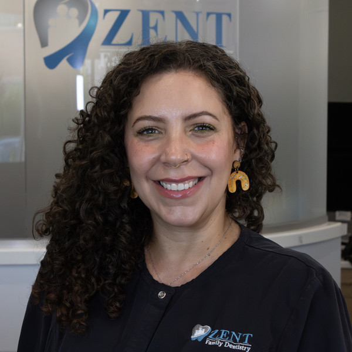
Belén
Belén was born and raised in Puerto Rico. She has been living in Indiana since 2007. Belén is fluent in both English and Spanish. Belén started working in the dental field in 2011 as a sterilization technician. While translating and educating patients on their needed dental treatments, she was inspired and motivated to pursue a career in dental assisting.
Belén’s favorite part of her job is being able to educate patients on their oral health needs and making sure every part of their experience, while at the dental office, is as pleasant and comfortable as possible. In her free time, Belén enjoys spending time with her children and friends, checking out local festivals, cooking, and making art.
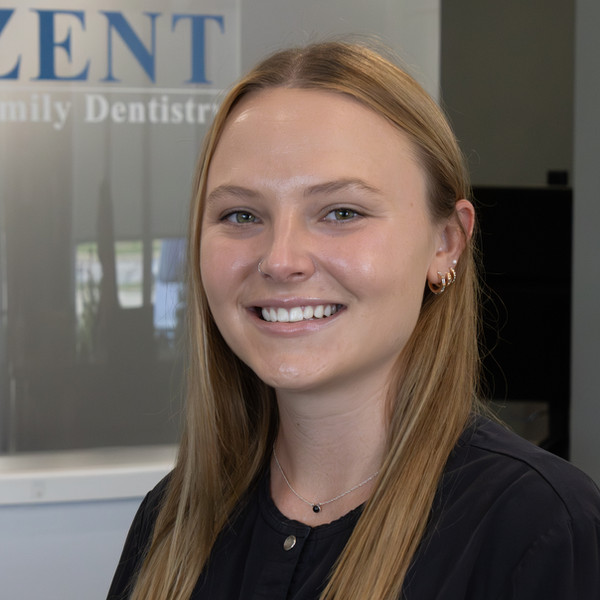
Dena
Dena was born and raised in South Bend. She went to Ivy Tech and has been in the dental field since 2015. She enjoys learning new ways to provide care to patients. Outside of the office she enjoys spending time with her dog Sunny, husband, family, and friends.
Luna
Come meet us in South Bend
Zent Family Dentistry is currently accepting new patients. Request your appointment today and discover the difference.
Request Appointment